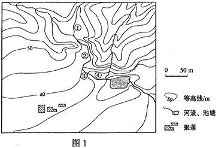
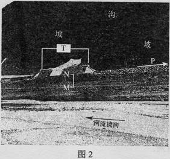
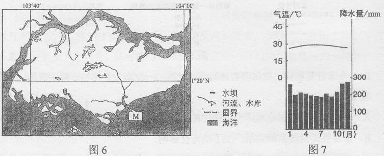
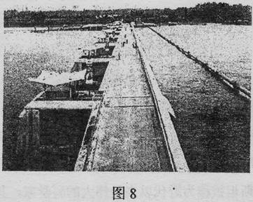
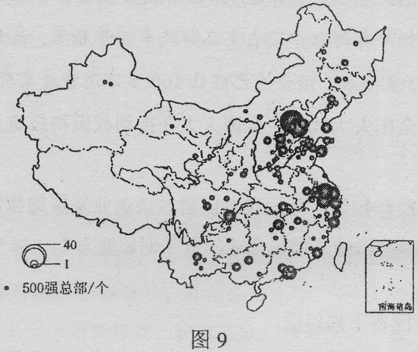
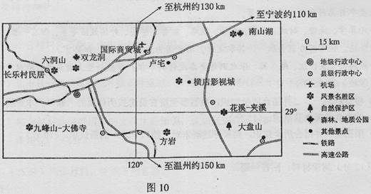
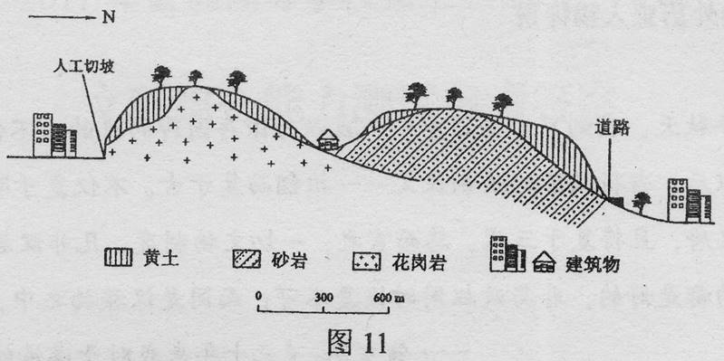

2011年普通高等学校招生全国统一考试（新课标）
文科综合地理部分
本试卷分第Ⅰ卷（选择题）和第Ⅱ卷（非选择题）两部分，第Ⅰ卷1至8页，第Ⅱ卷9至16页，共300分。[微软用户1]
考生注意：
1．答题前，考生务必在将自己的准考证号、姓名填写在答题卡上。考生要认真核对答题卡上粘贴的条形码的“准考证号、姓名、考试栏目”与考生本人准考证号、姓名是否一致。
2．第Ⅰ卷每小题选出答案后，用2B铅笔把答题卡上对应题目的答案标号涂黑，如需改动，用橡皮擦干净后，再选涂其他答案标号。第Ⅱ卷用黑色墨水签字笔在答题卡上书写作答，在试题卷上作答，答案无效。
3．考试结束，监考员将试题卷、答题卡一并收回。
第Ⅰ卷（选择题 共44分）
本卷共11个小题，每小题4分，共44分，在每小题给出的四个选项中，只有一项是符合题目要求的。
日本某汽车公司在中国建有多个整车生产厂和零部件生产厂。2011年3月11日东日本大地震及随后的海啸、核辐射灾害，使该公司在灾区的工厂停产。受其影响，该公司在中国的整车生产厂也被迫减产。据此完成1-2题。
1．该公司在中国建零部件生产厂，主要目的是
A．避免自然灾害对本土汽车生产的影响
B．为其中国整车生产厂配套，降低整车生产成本
C．利用中国廉价劳动力，为其日本整车厂服务
D．建立其全球整车生产的零部件供应基地
2．中国整车生产厂被迫减产是由于该公司在灾后有
A．研发中心 B．一般零部件厂
C．核心零部件厂 D．整车厂
第二次世界大战以后，美国通过大量技术投入和大规模专业化生产，成为世界最大的大豆生产国和出口国。巴西自20世纪70年代开始种植大豆，在积极培育优良品种的同时，鼓励农民组建农场联合体，实现了大豆的规模化生产和经营。目前，巴西的大豆产量、出口量仅次于美国。中国曾是世界最大的大豆生产国和出口国，近些年大豆的质量下降（品种退化，出油率低），生产成本较高，成为世界最大的大豆进口国。据此完成3-5题。
3．巴西大豆总产量增加的潜力大于美国，主要是因为巴西
A．技术力量较雄厚 B．气候条件较优越
C．可开垦的土地资源较丰富 D．劳动力较充足
4．在国际市场上，巴西大豆价格低于美国的主要原因是巴西
A．专业化水平较高 B．科技投入较大
C．劳动生产率较高 D．劳动力价格较低
5．中国要提高大豆质量亟需
A．加大科技投入 B．扩大种植面积
C．增加劳动力投入 D．加大化肥使用量
读图1，完成6-8题。

6．图示区域内最大高差可能为
A．50米 B．55米 C．60米 D．65米
7．图中①②③④附近河水流速最快的是
A．① B．② C．③ D．④
8. 在图示区域内拟建一座小型水库，设计坝高约13米，若仅考虑地形因素，最适宜建坝的坝顶长度约
A．15米 B．40米 C．65米 D．90米
下图显示青藏铁路从拉萨向北上坡段某处的景观。其中T是为保护铁路而建的工程设施。据此完成9－11题。

9．据图文信息可以推断
A．该段铁路沿等高线布线 B．该段河道冬季结冰
C．铁路沿箭头指示向拉萨延伸 D．箭头指示北方
10．[微软用户3] 间的堆积物来源于
A．坡 B．河流 C．沟 D．原地
11．设施的主要作用是
A．防御坡部位崩塌对铁路的危害
B．防御沟部位洪水及泥沙对铁路的危害
C．防御河流洪水对铁路的危害
D．方便野生动物穿越铁路线
第Ⅱ卷（非选择题）
36.（28分）依据图文资料及所学知识，完成下列各题。
某岛国人口约500万（2009年），经济发达，淡水资源严重不足。该国国土面积约640万平方千米，其中生态面积约500万平方千米，地形单调，平均海拔不足15米。岛上河流最长不足16千米。图6示意该国主岛及其附近地区，图7为对应的气候资料。

（1）简述该国气候特征，并分析该国淡水资源严重不足的主要原因。（10分）
（2）图8为图6中M水坝的景观。水坝阻挡海水涌入，并通过其闸门调控河流入海流量。说明建坝前后坝内水域水的咸淡变化及其原因。（12分）

（3）除建坝外，请你为该国再拟出一种解决淡水资源不足的方案，并说明理由。（6分）
37.（18分）图9示意2009年中国大陆制造业500强总部空间分布，回答下列问题。

（1）简述中国大陆制造业企业500强总部空间分布的特点。（8分）
（2）分析图示资料，以某城市或某区域为例，说明其吸引制造业企业总部的优势条件。（10分）
请考生在第42、43、44三道地理题中任选一题作答。如果多做，则按所做的第一题计分，作答时用2B铅笔在答题卡上把所选题目的题号涂黑。
42．（10分）旅游地理
读图10，分析图示区域自驾车旅游的优势条件。

43．（10分）自然灾害与防治
长江下游某城市边缘分布着丘陵，丘陵的基岩上有黄土覆盖（如图11所示）。近年来，由于城区扩展，大量开挖山坡，该地在夏季暴雨后曾发生多起黄土崩塌、滑坡灾害。

阅读图文资料，简要分析该地黄土崩塌、滑坡多发的原因
44．（10分）环境保护
某区域内湿地呈斑块状分布。 表1中的数据反映出该区域湿地的变化
表1中的数据反映出该区域湿地的变化
|
年份 |
湿地斑块数目（块） |
湿地总面积（hm2） |
湿地比率(%) |
|
1976 |
2251 |
88 893 |
42.99 |
|
1986 |
3721 |
39 639 |
19.17 |
|
2005 |
1973 |
19 230 |
9.30 |
阅读材料，分析该地在不同时期湿地变化的特点，说明湿地变化对环境的不利影响
文科综合能力测试参考答案
1.B 【解析】在中国建零部件厂发生在地震之前，A不正确。中国的整车生产使用中国生产的配件，减少运费，成本降低，B正确。汽车制造厂是资金与技术导向型工业，而不是劳动力导向型工业，C不正确。中国生产的零部件主要是供应中国的整车生产，D不正确。
2.C 【解析】由于技术保密等原因，部分核心零部件与主要研发机构仍在日本，所以地震造成这些零部件厂停产，中国的整车生产自然被迫减产，C正确。
3.C 【解析】巴西人口比美国少，巴西高原面积广大，适宜大豆种植，“20世纪70年代开始种植大豆”，开发种植较晚是最大的优势，C正确。
4.D 【解析】巴西大豆的专业化水平、科技投入、劳动生产率都没有美国高。巴西是发展中国家，劳动力价格便宜，D正确。
5.A 【解析】中国大豆种植历史悠久，“品种退化”严重，所以要提高大豆质量亟需加大科技投入，A正确。中国后备耕地资源少，不能扩大种植面积，增加劳动力投入，加大化肥使用量不能提高大豆质量。
6.C 【解析】图中最高处海拔在80―85米之间，最低处海拔在20―25米之间，所以最大高差无限接近65米，但不能是65米。C正确。
7.C 【解析】①②③④四处，③处等高线最密集，流速最快。C正确。
8.B 【解析】仅从地形因素考虑大坝建在如下图示位置[微软用户4] ，设计坝高13米，大坝顶端最高与50米等高线持平，略微超过50米等高线，由比例尺和测量可知坝顶长约为40米。
9.B 【解析】该段铁路是上坡，所以铁路不可能沿等高线布线，A不正确。因为该段是青藏铁路，地处青藏高原，虽然是河谷，冬季河流仍然结冰，B正确。题干中“从拉萨向北”“上坡段某处”只是说“上坡段某处”在拉萨以北，并没有给出拉萨的具体位置与北方位所在，故C、D不正确。
10.C 【解析】M、N间的堆积物在沟口处，所以是流水从沟里带来的沉积物堆积而成，C正确。
11.B 【解析】如果是防御坡部位崩塌T设施就不建在沟口处，A不正确。T设施相当于个隧道，铁路从下面穿过，让沟里的洪水与泥沙从上面流过，对铁路起到保护作用，B正确。防御河流洪水对铁路的危害，T设施就与河岸平行，而非与河岸垂直，C不正确。由上面分析，T设施是为了保护铁路而不是为野生动物留下通道，D不正确。
36．（28分）
（1）（10分）
气候特征：终年高温多雨
主要原因；国土面积小，地势低平，四周环海，陆地上储存淡水（地表水、地下水）的条件差（河流短小）人口密度大，经济发达，生活、生产对淡水需求量大
【解析】通过试题文字信息和图中经纬线，可以判断该岛国为新加坡，该国为城市国家，地域狭小，人口稠密，经济发达。通过图示的降水柱状和气温折线，所表达的气候类型为热带雨林气候，其特点是高温多雨。试题材料给出该国的淡水资源严重不足，从淡水资源问题设问，要求考生针对新加坡的国情分析淡水资源不足的原因及解决这一问题的措施。答好此题，就要求考生能回忆起淡水资源的相关概念，可利用水资源的类型以及水资源的利用和保护等相关原理和知识。从图示信息可以看出，新加坡国土面积狭小，没有大面积的湖泊，河流短小，且平均海拔不超过15米，地下水资源不足，淡水资源的储存条件有限，且人口稠密，经济发达，水资源的需求量大，因此淡水资源严重不足。
（2）（12分）
水坝修建以前，水偏咸原因：河流水流平缓，海潮（顶托作用）使河水和海水相混
水坝修建后，水逐渐变淡（改善）原因：拦蓄淡水，阻止海水倒灌；通过闸门调控蓄水和排水，逐渐使偏咸的水换成淡水
【解析】新加坡在其较大河流入海口处修建水坝，通过拦蓄淡水，阻止海水倒灌使坝内的水逐渐降低盐度，由咸变淡。
（3）（6分）
①从邻国（马来内亚）购买淡水。邻国（马来西亚）而积较大，高温多雨，有较多淡水。两国之间的海峡狭窄，输送淡水成本低。
②海水淡化。该国经济比较发达，四周环海，可选适当地点，建海水淡化厂，生产淡水。
③废水（污水）回收利用。该国经济发达，人口密度大，生活、生产废水（污水）产生量大。
【解析】新加坡还可通过从邻国（马来西亚）进口淡水，利用其雄厚的经济实力进行海水淡化，利用其先进的技术加强水资源的循环利用和提高水资源利用率等措施解决其水资源问题。
37．（18分）
（1）（8分）
分布不均衡；集中分布在东部沿海省市，以环渤海地区（或京津冀地区）、长江三角洲地区最为集中；西北部的省区总部数量较少。
【解析】据图可得出结论：东部环渤海地区（或京津冀地区）、长江三角洲地区最为集中，西北内陆分布最少。
（2）（10分）
举例（北京、上海等）。
优势条件。（说明：所述优势条件应与所举城市或区域相符，具体包括地理位置特点、经济水平、工业基础、基础设施、信息交流、科技水平、交通运输等方面。）
【解析】考察学生对工业企业区位条件的分析。答案不唯一，但核心内容是唯一的，考生必须把握好工业区位分析的一般思路，并且要熟悉所选区域的工业区位优势条件，所以答好此题有一定难度。
42．（10分）旅游地理
距主要客源地（抗州、宁波、温州等城市）距离适中，有高速公路连接；客源地居民收入高，私家车辆拥有多，出游率高；旅游资源类型多样，地域组合好，分布集中。
【解析】本题以不断发展的“自驾游”这种新的旅游方式为命题切入点，实际考察学生如何评价旅游资源，考察学生从图中获取地理信息并进行较准确阐述的能力。从图中可看出该区与旅游客源地（杭州、宁波、温州）路程在2小时车程内；客源地经济较发达，旅游需求旺盛；区域内有风景名胜区、自然保护区、森林地质公园等，类型多样，地域组合好，且各景区之间有公路相通，分布相对集中，这些对发展“自驾游”是十分有利的。
43．（10分）自然灾害与防治
黄土垂直节理发育，孔隙度大；人工开挖边坡，破坏了坡面地形的稳定性。
暴雨容易诱发坡地黄土崩塌；雨水下渗，在基岩与黄土之间容易形成滑动面，造成黄土滑坡。
【解析】从试题材料和剖面图可以分析出黄土覆盖在基岩上，与基岩的接触面就成为了土坡的滑动面，且在基岩上黄土厚度不均，呈现出坡顶和坡麓黄土层薄，坡中间厚的特点，这就容易出现一旦人工切坡（如图中所示），加上雨水下渗，基岩与黄土之间形成滑动面，在重力作用下出现滑坡。黄土直立性强，垂直节理发育，人工开挖边坡，就会破坏坡面地形的稳定性，容易导致黄土崩塌。
44．（10分）环境保护
变化特点：1976一1986年，湿地斑块数量显著增加，湿地破碎，湿地面积大幅度减少。
1986一2005年，湿地斑块数量和面积明显减少，湿地萎缩。
不利影响：涵养水源能力减弱；小气候变差；植被覆盖率下降；土壤侵蚀加剧；生态平衡破坏；生物栖息地减少；生物种类（数量）减少等。
【解析】本题分为两个问题，第一个问题是描述该区域不同时段湿地变化的特点，这是一个读表描述，分析表格中各项的数据，描述其变化即可，该问题的难度不大；第二个问题是说明湿地变化对环境的不利影响，可以通过回忆湿地的功能来进行说明。